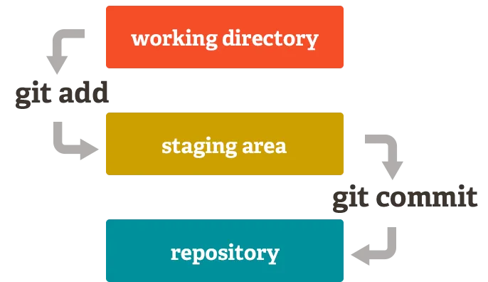
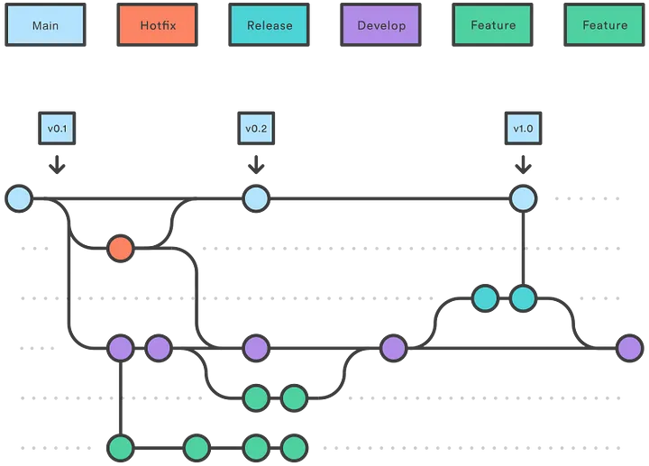
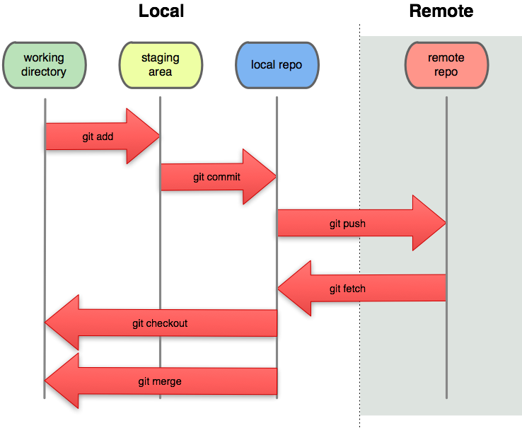
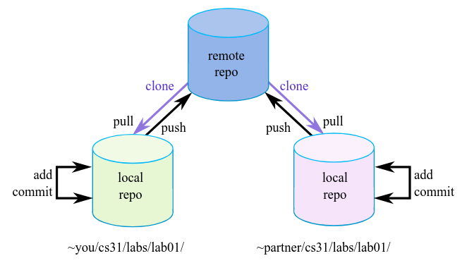
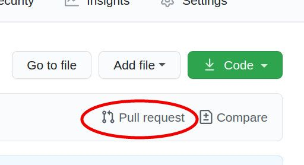
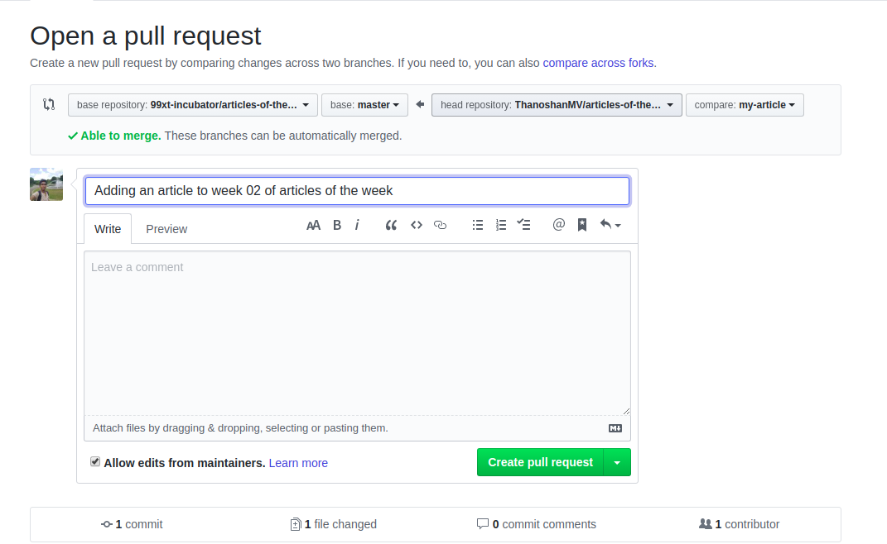

4.1.-Sistemas de control de versiones
4.1. Sistemas de control de versiones: Git & GitHub¶
1. Introducción¶
Un sistema de control de versiones es una herramienta que permite llevar un registro de los cambios realizados en el código fuente de un proyecto. Esto es útil para poder volver a versiones anteriores del código, comparar cambios, ver quién ha modificado algo, etc.
1.1. Historia¶
Los sistemas de control de versiones han evolucionado mucho a lo largo del tiempo. Los primeros sistemas de control de versiones eran locales, es decir, no permitían trabajar en paralelo con otros desarrolladores. Con el tiempo, han ido apareciendo sistemas de control de versiones distribuidos, que permiten trabajar en paralelo, colaborar con otros desarrolladores, etc.
1.2. Ventajas¶
Los sistemas de control de versiones tienen varias ventajas:
- Permiten llevar un registro de los cambios realizados en el código.
- Permiten trabajar en paralelo con otros desarrolladores.
- Permiten colaborar en proyectos de código abierto.
- Permiten volver a versiones anteriores del código.
1.3. Desventajas¶
Los sistemas de control de versiones tienen algunas desventajas:
- Pueden ser complicados de usar.
- Pueden requerir mucho espacio en disco.
- Pueden requerir mucho tiempo para aprender a usarlos.
1.4. Tipos¶
Hay varios tipos de sistemas de control de versiones:
- Sistemas de control de versiones locales: Son sistemas de control de versiones que almacenan el código en un único lugar, como un disco duro, un servidor, etc. Ejemplos: RCS, SCCS, etc.
- Sistemas de control de versiones centralizados: Son sistemas de control de versiones que almacenan el código en un único lugar, como un servidor central. Ejemplos: CVS, Subversion, etc.
- Sistemas de control de versiones distribuidos: Son sistemas de control de versiones que almacenan el código en varios lugares, como en el disco duro de cada desarrollador, en un servidor central, etc. Ejemplos: Git, Mercurial, Bazaar, etc.
- Sistemas de control de versiones en la nube: Son sistemas de control de versiones que almacenan el código en la nube, es decir, en servidores remotos. Ejemplos: GitHub, GitLab, Bitbucket, etc.
2. Git¶
Git es un sistema de control de versiones distribuido, es decir, cada usuario tiene una copia completa del repositorio en su máquina. Esto permite trabajar sin conexión a internet y tener un historial completo de los cambios.
2.1. Configuración¶
Git permite configurar varios parámetros, como el nombre del usuario, el correo electrónico, el editor de texto, alias, los ficheros que no se deben incluir en el repositorio, etc.
2.1.2. Configuración del usuario¶
La configuración del usuario incluye parámetros como el nombre del usuario, el correo electrónico, el editor de texto, etc.
La como el nombre del usuario, el correo electrónico, el editor de texto, etc.
```bash
# Configurar el nombre del usuario
git config --global user.name "Nombre Apellido"
# Configurar el correo electrónico
git config --global user.email "
# Configurar el editor de texto
git config --global core.editor "nano"
NOTA: La mayoría de estos comandos, y los que vendrán mas adelante, soportan múltiples opciones (banderas). Consultar documentación.
2.1.2. Configuración de .gitingore¶
Git permite configurar un archivo .gitignore para especificar qué archivos o carpetas no se deben incluir en el repositorio. Esto es útil para evitar subir archivos temporales, logs, etc.
# Crear un archivo .gitignore
touch .gitignore
# Añadir patrones al archivo .gitignore
echo "*.log" >> .gitignore
2.1.3. Configuración de alias¶
Git permite configurar alias para los comandos más utilizados. Esto es útil para abreviar los comandos y hacerlos más fáciles de recordar.
# Configurar un alias
git config --global alias.<nombre> <comando>
# Ver los alias configurados
git config --global --get-regexp alias
2.1.4. Configuración de color¶
Git permite configurar el color de la salida de los comandos. Esto es útil para resaltar la salida y hacerla más fácil de leer. También se le puede indicar que muestre sólo una línea por cada commit en la traza o que agregue archivos de forma interactiva
# Configurar el color de la salida de los comandos
git config --global color.ui auto
# Configurar la traza de commits
git config format.pretty oneline
# Configurar la adición de archivos de forma interactiva
git add -i
# Ver la configuración
git config --list
2.2. Espacios de trabajo¶
Git tiene tres espacios de trabajo: el directorio de trabajo, el área de preparación y el repositorio.
- El directorio de trabajo es donde se modifican los archivos.
- El área de preparación es donde se preparan los cambios que se van a incluir en el próximo commit.
- El repositorio es donde se almacenan los commits.

2.2.1. Directorio de trabajo¶
El directorio de trabajo es donde se modifican los archivos.
Es la primera sección del flujo, consta de archivos en los que está trabajando actualmente. En esta sección los archivos están con el estado “Untracked” y están disponibles para ser enviados a siguiente sección llamada “Staging area”. Para realizar la operación de traspaso entre estas dos secciones se utiliza el comando git add <file> .
# Ver el estado del directorio de trabajo
git status
# Ver los cambios realizados en el directorio de trabajo
git diff
2.2.2. Área de preparación¶
El área de preparación es donde se preparan los cambios que se van a incluir en el próximo commit. También se le conoce como "staging area" o "index".
Es la segunda sección del flujo, consta de archivos que están listos para ser enviados a la sección final llamada “Repositorio”. En esta sección los archivos están con el estado “Staged” y están disponibles para ser enviados a la sección final. Para realizar la operación de traspaso entre estas dos secciones se utiliza el comando git commit -m “Mensaje” .
# Añadir un archivo al área de preparación
git add <archivo>
# Ver el estado del área de preparación
git status
2.2.3. Repositorio¶
El repositorio es donde se almacenan los commits.
Es la última sección del flujo, consta de archivos que están guardados formalmente en el almacenamiento virtual de tu proyecto e inicia el flujo nuevamente en Working directory con los últimos cambios formales.
2.2.4. Head¶
Git tiene un puntero especial llamado HEAD que apunta al commit actual. Nos indica en qué punto de la historia del código estamos.
2.3. Comandos básicos¶
Los comandos básicos de Git nos permiten inicializar un repositorio, registrar cambios, ver el estado del repositorio, ver el historial de commits, etc.
# Inicializar un repositorio. En un nuevo directorio, ejecutar:
git init
# Para registrar cambios. Añadir un archivo al index.
git add <archivo>
git add . # Añadir todos los archivos
# Hacer un commit. Ahora el archivo está en el HEAD, pero no en el repositorio remoto.
git commit -m "Mensaje del commit"
# Ver el estado del repositorio
git status
# Ver el historial de commits
git log
# Deshacer cambios. Volver al último commit
git checkout -- <archivo>
2.3.1. Deshacer cambios¶
Git permite deshacer cambios de varias formas:
- Deshacer cambios en el directorio de trabajo: reemplazarás cambios locales usando el comando
git checkout -- <archivo>. Este comando reemplaza los cambios en tu directorio de trabajo con el último contenido de HEAD. Los cambios que ya han sido agregados al Index, así como también los nuevos archivos, se mantendrán sin cambio. - Deshacer cambios en el área de preparación:
git reset HEAD <archivo> - Deshacer un commit: `git reset --
- Deshacer un commit y deshacer cambios:
git reset --hard HEAD~1o Deshace todos los cambios locales y commits, puedes traer la última versión del servidor y apuntar a tu copia local principal de esta formagit fetch origin.
# Deshacer cambios en el directorio de trabajo
git checkout -- <archivo>
# Deshacer cambios en el área de preparación
git reset HEAD <archivo>
# Deshacer un commit
git reset --soft HEAD~1
# Deshacer un commit y deshacer cambios
git reset --hard HEAD~1
La principal diferencia entre git fetch y git pull es:
- Si haces un git fetch, simplemente obtendrá todos los cambios en el repositorio remoto (Github) y moverá el puntero origin/master a HEAD. Mientras tanto, tu rama local master seguirá apuntando a donde está.
- Si haces un git pull, básicamente hará fetch (como se explicó anteriormente) y fusionará cualquier cambio nuevo en tu rama master y moverá el puntero a HEAD.
por tanto, git pull = git fetch + merge.

2.4. Ramas¶
Otra característica importante en flujo el trabajo de Git son el uso de las ramas. Las ramas son espacios o entornos independientes para que un desarrollador pueda usar y trabajar sobre el proyecto sin afectar el conjunto de archivos originales. Las ramas se utilizan básicamente para separar ambientes y colaborar entre desarrolladores en un mismo proyecto sin afectar el uno al otro. El flujo de trabajo de ramas se basa en la bifurcación y convergencia, en donde existe un punto de separación y otro de unión.

Por defecto, al crear el repositorio Git crea una rama llamada "master" o "main", que es la rama principal, pero se pueden crear otras ramas.
Respecto a las ramas, se pueden crear, eliminar, fusionar, etc.
Lo habitual es trabajar en una rama para desarrollar nuevas funcionalidades, arreglar errores, etc, y cuando se ha terminado, fusionarla con la rama principal.
# Crear una rama
git branch <nombre>
# Cambiar a una rama
git checkout <nombre>
# Crear una rama y cambiar a ella
git checkout -b <nombre>
# Fusionar una rama con la rama actual
git merge <nombre>
# Eliminar una rama
git branch -d <nombre>
Ten en cuenta que las ramas son locales, es decir, no se suben al repositorio remoto. Para subir una rama al repositorio remoto, hay que hacer un push.
2.4.1. Rebase¶
El rebase es una forma de fusionar dos ramas de forma lineal, es decir, sin crear un commit de fusión. Es decir, se cogen los commits de una rama y se aplican sobre la otra rama. Nos permite llevar un conjunto de cambios a un punto de la historia del código diferente.
2.4.2. Resolución de conflictos¶
Cuando se fusionan dos ramas que han modificado el mismo archivo, puede haber conflictos. Estos se deben resolver manualmente.
# Ver las ramas fusionadas y no fusionadas
git branch --merged
git branch --no-merged
# Resolver conflictos
git mergetool
# Ver si hay conflictos pendientes
git status
2.4. Tags¶
Los tags son una forma de marcar un punto en la historia del repositorio. Se pueden usar para versiones, releases, etc.
# Crear un tag
git tag <nombre>
# Subir un tag a un repositorio remoto
git push --tags
# Ver los tags
git tag
# Ver el historial de un tag
git show <nombre>
# Cambiar a un tag
git checkout <nombre>
# Crear una rama a partir de un tag
git checkout -b <nombre> <tag>
# Fusionar un tag con la rama actual
git merge <nombre>
# Eliminar un tag
git tag -d <nombre>
2.4. Repositorios remotos¶
Cuantos más desarrolladores trabajen en un proyecto, más útil será tener un repositorio remoto. Los cambios inicialmente se realizan en un repositorio local, y luego se suben a un repositorio remoto.
Un repositorio remoto es una copia del repositorio local en un servidor. Git permite trabajar con varios repositorios remotos, como GitHub, GitLab, Bitbucket, etc. Veremos github más adelante.
# Clonar un repositorio remoto.
git clone <url>
# Si no se clonó el repositorio de uno existente, podemos conectar el repositorio local a un repositorio remoto. Para añadir un repositorio remoto. El nombre por defecto es "origin"
git remote add <nombre> <url>
# Ver los repositorios remotos
git remote -v
# Subir los cambios que están en el HEAD del repositorio local, a un repositorio remoto
git push <nombre> <rama>
# Descargar cambios de un repositorio remoto al repositorio local
git pull <nombre> <rama>


2.7. Flujo de trabajo¶
El flujo de trabajo típico con Git es el siguiente:
- Crear un repositorio local con
git inito clonar un repositorio remoto congit clone /path/to/repository. - Añadir archivos al repositorio con
git add. - Hacer un commit con
git commit. - Crear una rama con
git branch. - Cambiar a la rama con
git checkout. - Hacer cambios, añadir, hacer commits, etc.
- Fusionar la rama con
git merge.
3. GitHub¶
GitHub es una plataforma de desarrollo colaborativo que utiliza Git como sistema de control de versiones. Permite alojar proyectos, realizar seguimiento de problemas, tareas y solicitudes de funciones, y dar seguimiento a todos los cambios en el código.
3.1. Repositorios¶
Un repositorio es un lugar donde se almacena el código fuente de un proyecto. Puede ser público o privado, y puede tener varios colaboradores.
# Crear un repositorio
git init
git add .
git commit -m "Primer commit"
git remote add origin <url>
git push -u origin master
3.2. Issues¶
Las issues son una forma de realizar un seguimiento de tareas, mejoras, errores, etc. Se pueden asignar a usuarios, etiquetar, comentar, etc.
3.3. Pull Requests¶
Un pull request es una forma de proponer cambios en un repositorio. Se pueden revisar, comentar, aprobar, rechazar, etc.
Para crear un pull request, hay que hacer lo siguiente:
- Sobre un repostiorio clonado, crear una rama con
git checkout -b <rama>. - Hacer cambios, añadir, hacer commits, etc.
-
Subir la rama al repositorio remoto con
git push origin <rama>. -
Ir a la página del repositorio en GitHub y hacer clic en "New pull request".

-
Seleccionar la rama que se quiere fusionar con la rama principal.
- Añadir un título y una descripción.
-
Hacer clic en "Create pull request".

-
Esperar a que alguien revise el pull request.
-
Si se aprueba, fusionar el pull request.
-
Eliminar la rama.
-
Si se rechaza, hacer los cambios necesarios y volver al paso 3.
3.4. Gists¶
Los gists son una forma de compartir pequeños fragmentos de código. Se pueden crear, editar, comentar, etc.
4. Conclusiones¶
Git y GitHub son herramientas muy útiles para el desarrollo de software. Permiten llevar un control de los cambios realizados en el código, trabajar en paralelo, colaborar con otros desarrolladores, etc.